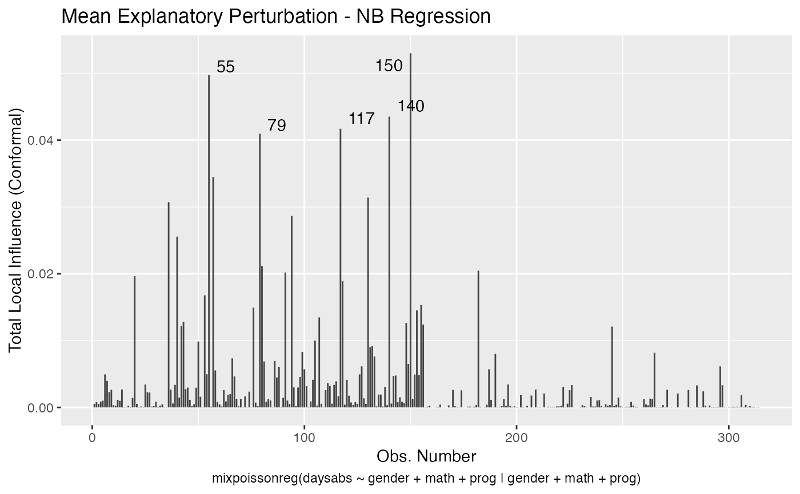
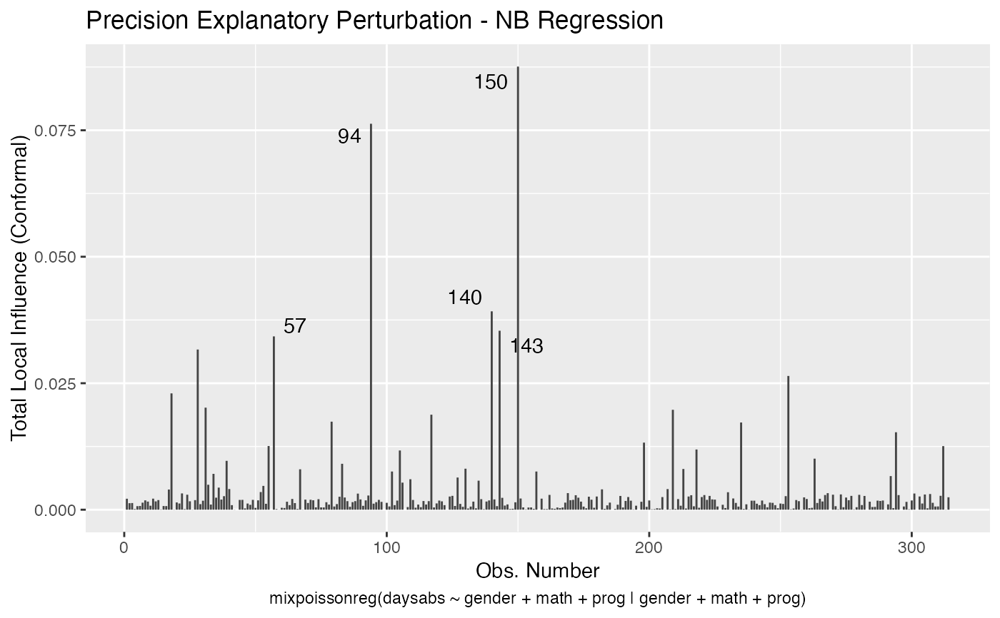
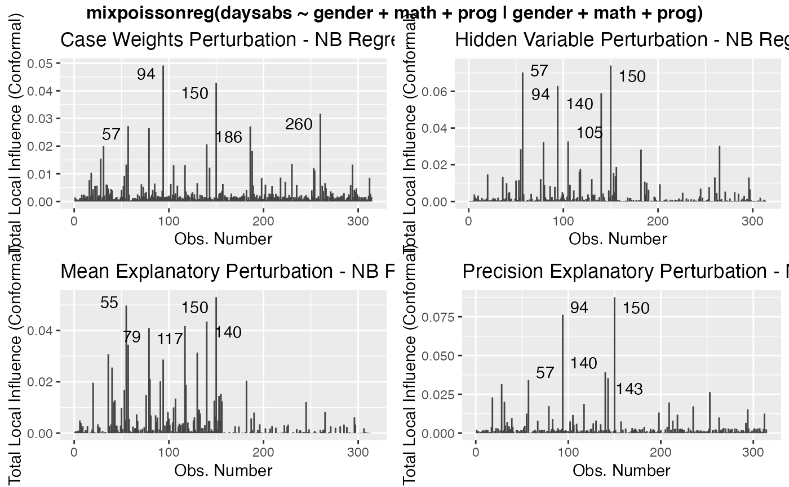
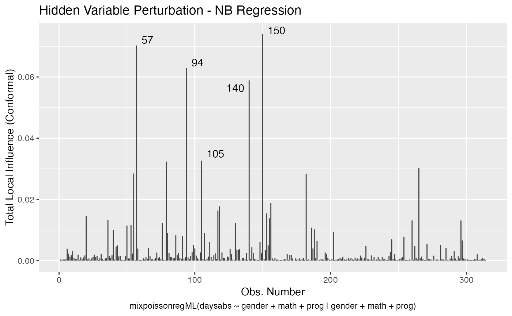

mixpoissonreg ObjectsR/8_tidy_mixpoissonreg.R
local_influence_autoplot.mixpoissonreg.RdFunction to provide customizable ggplot2-based plots of local influence diagnostics.
# S3 method for mixpoissonreg local_influence_autoplot( model, which = c(1, 2, 3, 4), title = list("Case Weights Perturbation", "Hidden Variable Perturbation", "Mean Explanatory Perturbation", "Precision Explanatory Perturbation", "Simultaneous Explanatory Perturbation"), title.size = NULL, title.bold = FALSE, title.colour = NULL, x.axis.col = NULL, y.axis.col = NULL, x.axis.size = NULL, y.axis.size = NULL, type.plot = "linerange", curvature = c("conformal", "normal"), direction = c("canonical", "max.eigen"), parameters = c("all", "mean", "precision"), mean.covariates = NULL, precision.covariates = NULL, label.repel = TRUE, nrow = NULL, ncol = NULL, ask = prod(graphics::par("mfcol")) < length(which) && grDevices::dev.interactive(), include.modeltype = TRUE, sub.caption = NULL, sub.caption.col = NULL, sub.caption.size = NULL, sub.caption.face = NULL, sub.caption.hjust = 0.5, gpar_sub.caption = list(fontface = "bold"), detect.influential = TRUE, n.influential = 5, draw.benchmark = FALSE, colour = "#444444", size = NULL, linetype = NULL, alpha = NULL, fill = NULL, shape = NULL, label = TRUE, label.label = NULL, label.colour = "#000000", label.alpha = NULL, label.size = NULL, label.angle = NULL, label.family = NULL, label.fontface = NULL, label.lineheight = NULL, label.hjust = NULL, label.vjust = NULL, ad.colour = "#888888", ad.linetype = "dashed", ad.size = 0.2, ... )
| model | A |
|---|---|
| which | a list or vector indicating which plots should be displayed. If a subset of the plots is required, specify a subset of the numbers 1:5, see caption below (and the 'Details') for the different kinds. |
| title | titles to appear above the plots; character vector or list of valid graphics annotations. Can be set to "" to suppress all titles. |
| title.size | numerical indicating the size of the titles. |
| title.bold | logical indicating whether the titles should be bold. The default is FALSE. |
| title.colour | title colour. |
| x.axis.col | colour of the x axis title. |
| y.axis.col | colour of the y axis title. |
| x.axis.size | size of the x axis title. |
| y.axis.size | size of the y axis title. |
| type.plot | a character indicating the type of the plots. The default is "linerange". The options are "linerange" and "points". |
| curvature | the curvature to be returned, 'conformal' for the conformal normal curvature (see Zhu and Lee, 2001 and Poon and Poon, 1999) or 'normal' (see Zhu and Lee, 2001 and Cook, 1986). |
| direction | the 'max.eigen' returns the eigenvector associated to the largest eigenvalue of the perturbation matrix. The 'canonical' considers the curvatures under the canonical directions, which is known as "total local curvature" (see Lesaffre and Verbeke, 1998). For conformal normal curvatures both of them coincide. The default is 'canonical'. |
| parameters | the parameter to which the local influence will be computed. The options are 'all', 'mean' and 'precision'. This argument affects the 'case_weights' and 'hidden_variable' perturbation schemes. The default is 'all'. |
| mean.covariates | a list or vector of characters containing the mean-explanatory variables to be used in the 'mean-explanatory' and 'simultaneous-explanatory' perturbation schemes. If NULL, the 'mean-explanatory' and 'simultaneous-explanatory' perturbation schemes will be computed by perturbing all mean-related covariates. The default is NULL. |
| precision.covariates | a list or vector of characters containing the precision-explanatory variables to be used in the 'precision-explanatory' and 'simultaneous-explanatory' perturbation schemes. If NULL, the 'precision-explanatory' and 'simultaneous-explanatory' perturbation schemes will be computed by perturbing all precision-related covariates. The default is NULL. |
| label.repel | Logical flag indicating whether to use ggrepel to place the labels. |
| nrow | Number of facet/subplot rows. If both |
| ncol | Number of facet/subplot columns. If both |
| ask | logical; if |
| include.modeltype | logical. Indicates whether the model type ('NB' or 'PIG') should be displayed on the captions. |
| sub.caption | common title-above the figures if there are more than one. If NULL, as by default, a possible abbreviated version of deparse(x$call) is used. |
| sub.caption.col | color of subcaption (when one figure at a time). |
| sub.caption.size | size of subcaption (when one figure at a time). |
| sub.caption.face | font face for subcaption, options are: "plain", "bold", "italic" and "bold.italic". |
| sub.caption.hjust | indicates the position of the subcaption (when one figure at a time). The default is 0.5, which indicates that the subcaption is centered, a value 0 places the subcaption at the left side of the plot whereas a value of 1 places the subcaption at the right side of the plot. |
| gpar_sub.caption | list of gpar parameters to be used as common title in the case of multiple plots. The title will be given in sub.caption argument. See
the help of |
| detect.influential | logical. Indicates whether the benchmark should be used to detect influential observations and identify them on the plot. If there is no benchmark available, the top 'n.influential' observations will be identified in the plot by their indexes. |
| n.influential | interger. The maximum number of influential observations to be identified on the plot. |
| draw.benchmark | logical. Indicates whether a horizontal line identifying the benchmark should be drawn. |
| colour | line colour. |
| size | point size. |
| linetype | line type. |
| alpha | alpha of the plot. |
| fill | fill colour. |
| shape | point shape. |
| label | Logical value whether to display labels. |
| label.label | vector of labels. If |
| label.colour | Colour for text labels. |
| label.alpha | Alpha for text labels. |
| label.size | Size for text labels. |
| label.angle | Angle for text labels. |
| label.family | Font family for text labels. |
| label.fontface | Fontface for text labels. |
| label.lineheight | Lineheight for text labels. |
| label.hjust | Horizontal adjustment for text labels. |
| label.vjust | Vertical adjustment for text labels. |
| ad.colour | Line colour for additional lines. |
| ad.linetype | Line type for additional lines. |
| ad.size | Fill colour for additional lines. |
| ... | Currently not used. |
DOI:10.1007/s11222-015-9601-6 doi: 10.1007/s11222-015-9601-6 (Barreto-Souza and Simas; 2016)
Cook, R. D. (1986) Assessment of Local Influence. Journal of the Royal Statistical Society. Series B (Methodological), Vol. 48, pp.133-169. https://rss.onlinelibrary.wiley.com/doi/10.1111/j.2517-6161.1986.tb01398.x
Lesaffre, E. and Verbeke, G. (1998) Local Influence in Linear Mixed Models. Biometrics, 54, pp. 570-582.
Poon, W.-Y. and Poon, Y.S. (2002) Conformal normal curvature and assessment of local influence. Journal of the Royal Statistical Society. Series B (Methodological), Vol. 61, pp.51-61. https://rss.onlinelibrary.wiley.com/doi/abs/10.1111/1467-9868.00162
Zhu, H.-T. and Lee, S.-Y. (2001) Local influence for incomplete data models. Journal of the Royal Statistical Society. Series B (Methodological), Vol. 63, pp.111-126. https://rss.onlinelibrary.wiley.com/doi/abs/10.1111/1467-9868.00279
# \donttest{ data("Attendance", package = "mixpoissonreg") daysabs_fit <- mixpoissonreg(daysabs ~ gender + math + prog | gender + math + prog, data = Attendance) local_influence_autoplot(daysabs_fit)daysabs_fit_ml <- mixpoissonregML(daysabs ~ gender + math + prog | gender + math + prog, data = Attendance, envelope = 100) local_influence_autoplot(daysabs_fit_ml, which = 2)# }